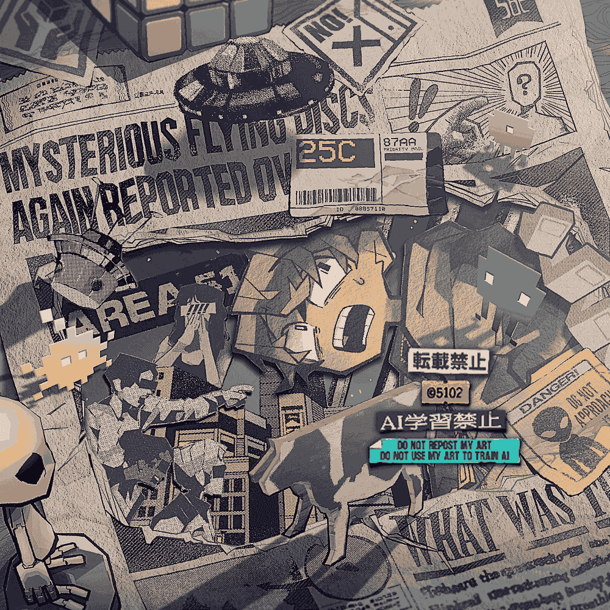

2023年9月30日に納品。
画面中央の25Cラベルのシワが、遠くから見ると写真に見えないこともなく驚き。
今後もこんなシワが描けるといいが、描き方がまだ自分でよくわかっておらず…
さて、資料集め中に見つけた、なんとも不気味なUFOの事例をちょっと紹介したい。
1978年10月21日、フレデリック・ヴァレンティッヒというオーストラリア人パイロットが訓練中に失踪してしまう、という事件があったそう。
彼は最後に「It's not an aircraft(あれは飛行機なんかじゃない)」という意味深な録音を残して姿を消した。
捜索活動はとうの昔にとっくに中止され、彼は今も行方不明のままらしい…。
気になる人はWikipediaでチェックしてみてください。
私が初めてコミッションを始めた時、一番最初に依頼を下さった方がこうして再び依頼を下さったというのはすごく光栄なことです。ご依頼ありがとうございました。
2023/09/30
 Commission
Commission